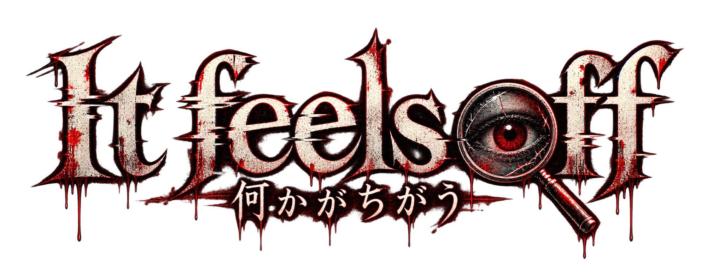

画像の中の「違和感」をタップ
3回ミスするとゲームオーバー
画面をタップしてスタート
ステージ選択
01 / 70
LOADING...
STAGE 1
正解部分のアップ
HITBOX EDITOR
当たり判定調整
画像上をドラッグして正解範囲を囲んでください。下のボタンで少しずつ微調整できます。
STAGE 1 / 70
LOADING...
赤い枠が現在の当たり判定です。
x: 0.000 / y: 0.000 / w: 0.000 / h: 0.000
正解時の説明テキスト
GAME CLEAR!
クリア数0 / 70
合計ミス0